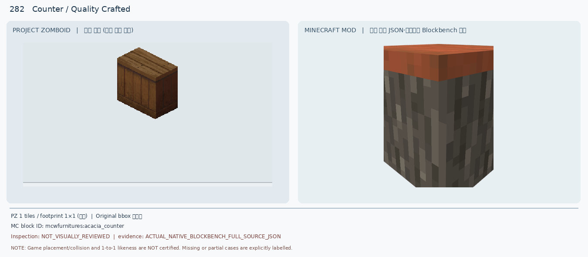
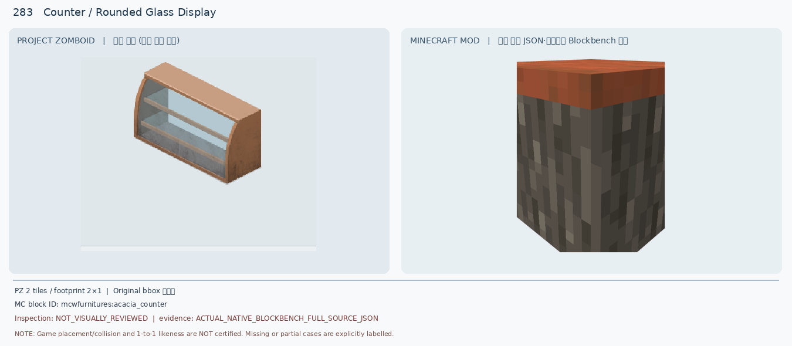
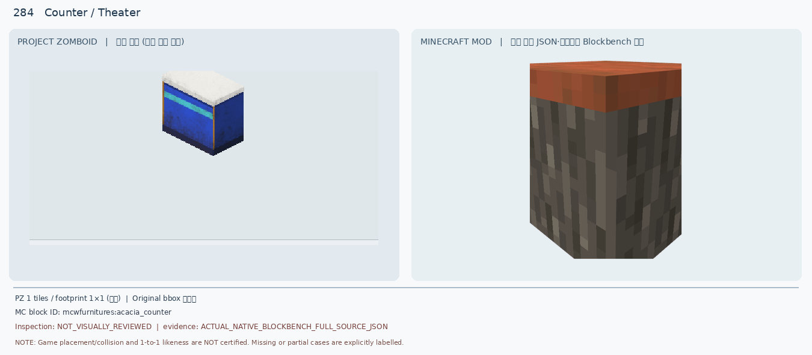
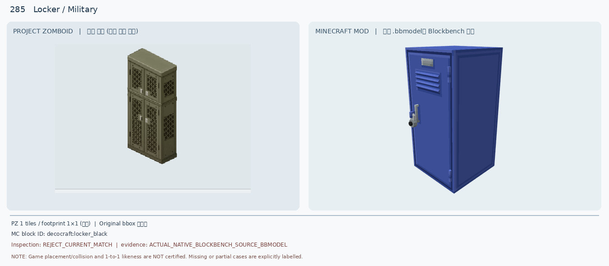
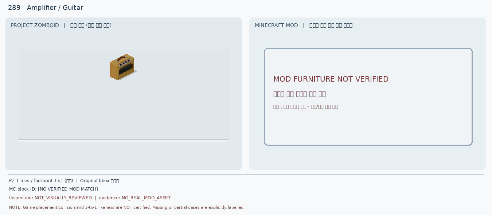

281 Counter / Pizzawhirled (DEFER)

PZ는 빨강/흰 타일 패널·짙은 갈색 상판. 후보는 주황 상판·회흑색 통나무 큐브. 색상·전면 타일 패턴 불일치.
조건부 1 · 보류 9 · 신규 렌더 0 · 인게임 인증 0
PZ는 빨강/흰 타일 패널·짙은 갈색 상판. 후보는 주황 상판·회흑색 통나무 큐브. 색상·전면 타일 패턴 불일치.

PZ는 갈색 세로 목재 판넬·판재 상판. 후보는 검은 나무껍질 측면·주황 상판. 패널 구조와 색조 불일치.

PZ는 곡면 투명 유리·2단 진열 선반·2칸 목재 쇼케이스. 후보는 불투명 단일 큐브.

PZ는 흰 상판·파란 본체·청록 가로띠. 후보는 주황/회흑 나무 큐브.

PZ는 카키색 철망 4문 군용 로커. 후보는 파란색 단일 철문·환기구 로커. 문 개수·망사·색상 불일치.

PZ는 밝은 목재 1×2 식탁·4개 다리. 후보는 컵·접시·수저 식기 소품뿐이며 테이블 본체 없음.

PZ는 진한 상판·붉은 테두리·중앙 받침기둥의 2×1 식탁. 후보는 얇은 평면만 렌더된 부분 JSON.

PZ는 양끝 밝은 목재 기둥과 노출된 가로 옷걸이 봉의 3칸 행거. 후보는 닫힌 어두운 1칸 옷장 일부.

PZ는 황토색 기타 앰프·상단 조작 노브·검은 전면 그릴. Minecraft 실제 모델 후보가 없어 비교 불가.

양쪽 모두 회색 직육면체 전면도어 식기세척기. PZ는 긴 검은 상단 조작판·낮고 넓은 비율, 후보는 작은 손잡이형 조작부와 다른 문 테두리.